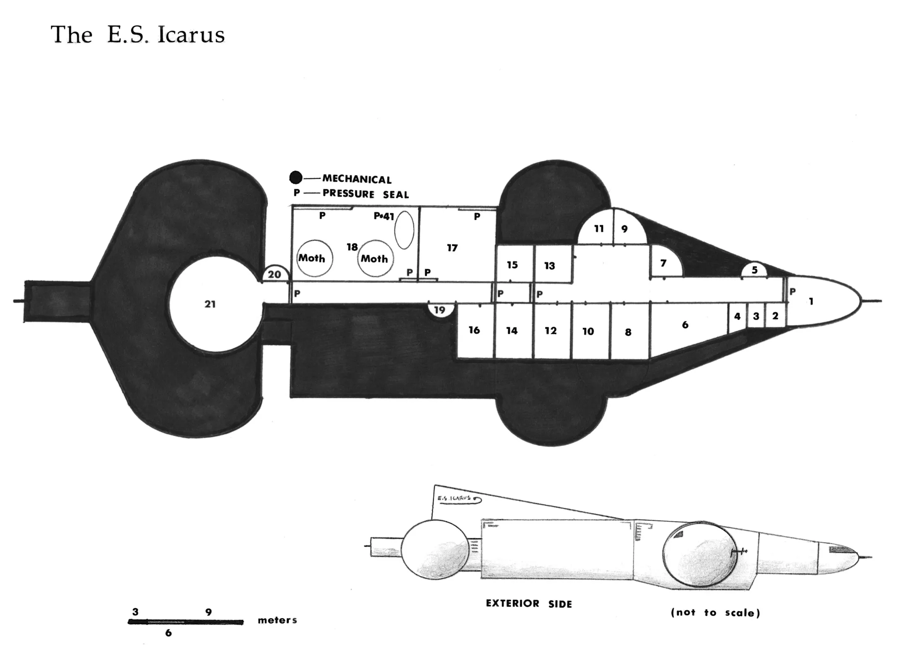
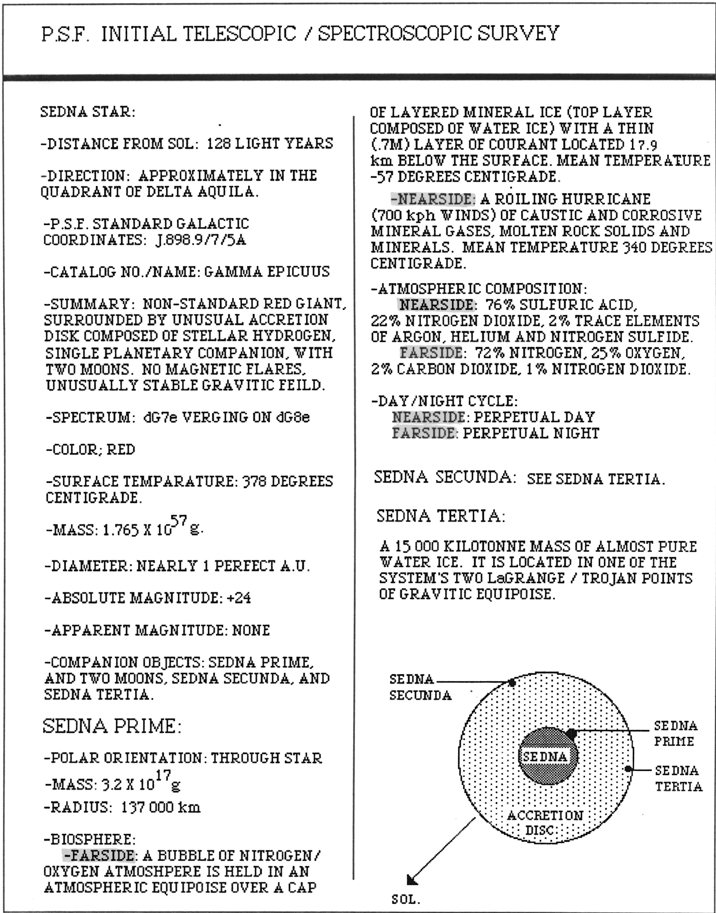
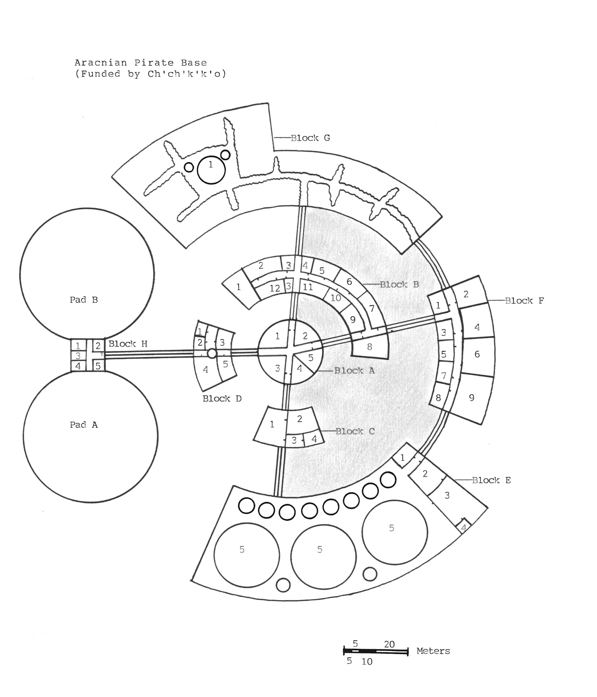

A Genesis Role Playing Game Adventure
Game Master Introduction
Because of the complexity of this adventure, it will be presented in three different narritives that range in difficulty from easy to hard. The game master can determine which format is best suited to the experience of his players and himself. The different adventures will be based on the same set of data, provided in this booklet, and any differences will be explained briefly in both the introduction and a small summary at the beginning of each new section.
The Scenarios
- Report & Run, is the easiest, for beginning game-masters (GM's) and players
- Search & Destroy, is more difficult
- Search & Rescue, is by far the most difficult
Each scenario will have certain benefits and disadvantages. The easiest will probably be boringly simple for the experienced gamer, and the hardest will be impossibly complex for the beginning game master to organize and run. The best thing to remember is that the game should be fun for both the players and the GM.
Be advised that there data below that will not be needed for all three scenarios. If the game master is running a scenario that does not incorporate all the data, he or she ignore any extraneous information.
As stated in the adventures section of the Caudex Centia, a game is very much like a game of 'Lets-pretend' with a complex set of rules that must be followed. For the experienced gamer, setting up an adventure can be quite easy, but for the beginner it can seem quite complex and difficult. Sedna Rendezvous has been set up to give both experienced and beginning gamers a shot at learning the rules and having fun all at the same time. It will be easier for the the beginning Game Master to follow the scenarios as they are presented, but he or she should not be afraid to Ad-Lib at times. If the adventure seem to be going dry, throw in a new twist of your own devising if you wish.
In this adventure the beginning gamers will have a chance to 'try-out' their characters and the rules of the game. They will experience first hand how combat works, how to use their skills and how to interact with each other in the setting of the game. You as the Game Master will be a sort of referee to this. You will control all the people in the adventure that are not players - non-player characters, or NP's. You will determine how the action goes , and above all you will learn to mediate fairly between what the characters do, and what your non-player characters (NPC's) do.
The good Game Master does not use the words Can't or No. If your players will not go the route described in this adventure, then Ad-Lib them into a position that brings them back on course, do not just say You can't do that!
For Example: You, the Game Master, want the players to turn left on a path in the woods. You know that to the left lies the adventure and all the action, but the game says nothing about what lies down the right fork in the path. Your players, however, want to go down the right hand path.
Don't say no! Instead lead the adventure so that they either go back to the left path, or that they end up in the same location as if they had chosen to go left. Nothing is more boring for a player than to be told what they can and cannot do. Show it to them by letting them play it out. They shouldn't go down the right hand path because three miles down it has been completely washed out by a flood, because it is buried by an impassable avalanche of piled rocks and boulders, because they find a village of man-eating Aracnians right in the middle of the path. Whatever the case, it is not because the Game Master does not want them to.
Game Master Notes
The brief introductions below are a guide to get your players started in the adventure. In this way, by stranding them on the ship that is about to enter the Sedna system they have no option but to plunge right into the adventure.
When you see a block of text formated like as below.
This is text which is written to help the GM. This can be read aloud to the players
Adventure Begins Here
1 - Report & Run
The S.S. Racine, a science survey vessel, and her escort, the L.C.M.S. Candor, have disappeared. They had been sent to the Sedna System, a newly discovered Solar system in the quadrant of Beta Aquila. The Poly Solar Foundation has requested, through Dr. Vilmoot, that you, the players, on a reconnaissance mission in the sector, on board the exploration ship E.S. Icarus, pass through the Sedna system on a reconnaissance mission. Simply, the mission will be to cruise through, take detailed recordings and readings on the system, and the status of the S.S. Racine and the L.C.M.S. Candor, whatever they may be, and to report back to the P.S.F. headquarters in Milmoth sector.
Your Eclipse class scout, equipped with fast drive and super-sensitive detection devices, and its crew, are under instruction by the P.S.F. to return at all cost with this valuable information, as there is suspicion of hostile alien activity in the sector.
2 - Search & Destroy
The S.S. Racine, a science survey vessel, and her escort, the L.C.M.S. Candor, have disappeared in the Sedna system, near Beta Aquila. You, the players, on board the Eclipse class Scout Cruiser, E.S.Icarus, have been requested by the P.S.F. through Captain Vandervekken, to go to the Sedna system. There have been confirmed reports of a hostile alien pirate base operating out of this system. With the armaments and equipment on the Icarus, you have been ordered to search out the pirate base located in this system, and destroy it.
The P.S.F. has issued Captain Vandervekken and his crew sanction to act as deputies to the council and enabled them to take whatever actions necessary. The Captain has been advised that should the situation merit it, the crew and the passengers of the E.S. Icarus are expendable, and should it be the only viable option, the Captain is to use the Icarus as a missile to destroy the base.
Should the mission succeed, there will be generous rewards for the crew of the Icarus, as well as rewards for the capture of any alien technology.
3 - Search & Rescue
The S.S. Racine, a scientific survey ship, and her escort, the L.C.M.S. Condor, have disappeared in the Sedna system, near Delta Aquila. The P.S.F has requested through both Captain Vandervekken and Dr. Vilmoot, that the crew of the E.S. Icarus, the only representative within lightyears of the system, go to Sedna and attempt to rescue the crews of the Racine and the Condor.
The P.S.F. suspects that there is hostile alien pirate activity out of the Sedna system. The crew of the Icarus is warned that the pirates are thought to be ruthless, and to take caution in proceeding on this mission.
A generous reward will be offered to the surviving crew of the Icarus, as well as bonuses for each surviving crew member of the Candor or Racine that they return to the P.S.F. headquarters in Milmoth sector.
The P.S.F. has offered sanctions to Captain Vandervekken and Dr. Vilmoot, giving them leave to take any action that they feel is necessary, but they and the crew are warned that they are not expendable, and that they should take any actions necessary to bring this information or surviving crew members back to P.S.F. space.
- All Scenarios
At the ship's present speed, the Icarus will reach the heliopause of the Sedna system in twelve minutes...

Floor Plan of the Icarus

P.S.F. Initial Telescopic SurveyThe large accretion disk of the star is severely interfering with the detection devices and scanners of the ship. The computer is compensating, but detection clarity is down by 75%.
Soon after this the Icarus will be attacked by the Aracnian ship K'k'to'pok, the mining ship.
| Attribute | Details |
|---|---|
| Name | K'k'to'pok |
| Classification | Beetle Class Mining Ship |
| Propulsion | Fusion Drive |
| Crew | 10 |
| Mass | 62 Kilo tonnes |
| Dimensions | 50 m x 37 m x 37 m |
| Speed | Cruise 50 Ips. |
| Armaments | Grapnel arms |
In battle, the K'k'to'pok will attempt to grip the Icarus with its grapnel arms. If it gets a grip on the scout cruiser, it will succeed in cutting a hole in the hull of the ship and venting all the atmosphere into space. This process will take 10 minutes. If the ship does not get a grip on the Icarus in the first attempt ( 45% chance to succeed) then the exploration ship will easily be able to out manoeuvre it. However the mining ship is heavily armoured. It will take twelve hits from the laser cannon of the Icarus to breach its hull, unless the laser scores a direct hit to the drive, in which case it will be instantly destroyed. Because the detection clarity is down, all attempts to hit the mining ship with a blast from the laser cannon should be rolled on the chart below:
| Roll 1:100sd | Result |
|---|---|
| 01 - 10 | Engine hit (Ship destroyed*) |
| 11 - 45 | Hull hit |
| 46 -100 | Miss |
All laser attacks should be rolled on the above table for results.
- Should the mining ship be destroyed on the first hit, a shard of shrapnel from the explosion will hit the bridge of the Icarus. In this case all bridge officers will be killed instantly, and the players will be left to control the ship from backup conrols in engineering.
Several rounds after the K'k'to'pok engages the Icarus in battle, so to will the Aracnian light cruiser, Chk'o'o'ka. If the mining ship is destroyed, the Icarus will have a much more even chance of surviving, for if both Aracnian ships are still functioning when the Chk'o'o'ka arrives, the mining ship will retreat, and then attempt to reattach to the Icarus while the light cruiser distracts it. The aracnian cruiser, though is suffering from the same difficulty that the Icarus is. Its detection clarity also is hampered by the acretion disc of the star.
| Attribute | Details |
|---|---|
| Name | Ch'o'o'ka |
| Classification | Spiaer Class Scout Cruiser |
| Propuision | Fusion Drive, D-warp |
| Crew | 20 |
| Mass | 172 Kilotonnes |
| Dimensions | 325 m x 127 m 76 m |
| Speed | Cruise 175 Kps |
| Armaments | 2 Laser Cannons. 1 Fore, 1 Aft |
The Chk'o'o'ka also is heavily armoured, and will take twelve hits from the laser cannon on the Icarus before it's hull is breached, unless a direct hit is scored on the ship's drive. This will destroy the ship totally.
If both aracnian ships are destroyed, the Icarus will have free reign in the Sedna system so long as she does not land on the planet, Sedna Prime. On the south pole of this planet is the Aracnian pirate base.
Successful Results
-
Report & Run
They have accomplished their goal and can proceed back to the P.S.F. base in Milmoth sector. -
Search & Destroy
They have completed the scenario upon destroying the base, and can then proceed to the P.S.F. base in Milmoth sector. To destroy the pirate base, the Icarus could simply hover over it and hit it with repeated laser blasts, however the base is armed with a laser cannon as well, and will fire back, if the crew of the Icarus decide on this option. The same table used in the space battles should be used to resolve this combat, with the base taking twenty hits to be destroyed. Another means of destroying the Aracnian base would be to set a large piece of wreckage from the aracnian ships on an intercept trajectory with the base. Dropping one such meteor will destroy the base utterly. -
Search & Rescue
They must proceed down to the Aracnian base and try to rescue the survivors, if any, of the Racine or the Candor.
There are a total of forty-five (45) crew members in the base
- 20 Scout ship crew
- 10 Mining ship crew
- 15 Support staff

Aracnian base floor planAppendices
E.S. Icarus
The E.S. (Exploration Ship) Icarus is an Eclipse class exploration scout cruiser. It has been privately chartered by a Professor Villmoot to explore a region of 100 LY 3 (cubic light years) in the region of Delta Aquila. The Icarus is the ship on which the players are employed, either by Captain Vandervekken or by Professor Villmoot.
Ship's Specifications
| Attribute | Details |
|---|---|
| Name | E.S. Icarus |
| Classification | Eclipse Class Scott / Exploration Cruiser |
| Propulsion | Low Intensity Fusion Drive / D-Warp |
| Crew | 16 Max |
| Mass | 127 Kilo tonnes |
| Dimensions | 138 m X 72 m x 14 m |
| Speed | Cruise 150 Kps. |
| Armaments | 1 Laser Cannon. Fore |
| Equipment | 2 Moths, 1 P-41 Iguana |
Living Spaces
-
Bridge - This room is standard for all Eclipse class cruisers. Each of the bridge crew members server their own function, and can as needed substitute for the others. There are separate chairs and consoles for each of the five bridge crew members:
- Captain
- Pilot
- Engineer
- Communications Office
- Security Officer
- Storage Locker - This storage locker holds the 15 Vacc. Suits that are kept on the ship for use by the crew and passengers alike.
- Storage Locker - This locker holds all tools for any necessary repairs that can be made in the ship. This included repair kits for the two Moths and the P-41 Iguana in the hangar deck.
- Storage Locker - Contains four life bubbles, grav. packs, life boats (zodiacs) as well as any other emergency equipment on the ship.
- Air Lock #1 - The forward access to the exterior of the ship.
- Sickbay - In this room all medical functions are performed. It provides a sterile environment. It also servers double duty as the medical offices quarters.
- Captain's Cabin - The austere room is the captain's cabin. It contains all his persona belongings, and is expressly off limits to any without invitation. The only thing of note in this room is a small safe in which Captain Vandervekken keeps the order or notes given him by his P.S.F. Contact.
- Engineer's Cabin - The quarters of the engineering office. Like the quarters of the rest of the bridge-crew, his are austere and spartan.
- Officers Cabin - These are the quarters of the majority of the bridge-crew. It contains the personal belongings of the pilot, communications, and security officer. Again a strict policy of respected privacy is in effect at all times.
- Passenger Cabin - This room will server as the quarters for three of the player characters. It is plain and spartan, having only one bunk, one foot locker, and one closet locker for each character.
- Professor Villmoot's Cabin - This room have been specially adapted to the conditions required for the professor's comfort. It is half filled with water (retained by an artificial gravity polarization field) and the partial pressures of gases in the air are somewhat different than the rest of the ship.
- Passenger Cabin - This cabin will server as living quarters for three player characters.
- Common Room / theater - A small lounge in which the crew can meet, recreate, and relax. This theater also serves as a briefing room.
- Cabin - This cabin can be used as either more storage, or as the quarters for any additional player characters not yet accommodated.
- Mess Hall / Kitchen - All food preparation and most of it's consumption takes place here. It is equipped with a standard Servodyne 600 auto kitchen, a table and fold out chairs.
- Gymnasium - An activities room intended to help the crew of the Icarus stay in top physical shape. A number of activity aids can be folded out of the walls. It can be filled with water or reduced to zero-G.
- Storage - all ship's food-stuffs, gymnasium equipment, drinking water, etc. are stored in this large warehouse-like hold.
- Hangar Deck - This hangar contains 2 Moths and the P-41 Iguana in there respective launch cradles. It is small, crowded but serves the purpose effectively.
- Storage Locker - This storage can be used by passengers and crew to store excess personal belongings brought on-board.
- Airlock #2 - This is the rear access to the exterior of the Icarus.
- Engineering - This is the chief Engineer's office. All functions having to do with the in-transit upkeep and maintenance of the ship are performed from this room.
Note: 2 of the player characters should be encouraged to have atmospheric pilot skills
Ship's Stores
In the standard equipment included on all P.S.F. scout cruisers are items that the characters may find useful.
| Quantity | Item |
|---|---|
| 60x | 60 hour air tanks |
| 15 | biomonitors |
| 30 | short range communicators |
| 30 | long range communicators |
| 5 | compasses |
| 5 | first aid kits |
| 5 | packages of flares |
| 10 | floater packs |
| 15 | G'chutes |
| 3 | hand sensors |
| 1 | computer tool kit |
| 1 | weapons tool kit |
| 2 | holomaps baords |
| 10 | IR visors |
| 5 | life bubbles |
| 5 | planetary maneuver packs |
| 12 | medical pouches |
| 7 | moisture canteens |
| 3x | 6 person pressure tents |
| 2 | packets of ration pills |
| 3 | short range scanners |
| 1 | long range scanner |
| 15 | sets of snow gear |
| 15 | survival knives |
| 15 | thermal blankets |
| 15 | translators |
| 15 | weapon upkeep kits |
| 5 | ablative vests |
| 10 | riot shields |
| 10 | padded suits |
| 15 | laser pistols |
| 1 | grenade gun |
| 75 | grenades, assorted |
| 1 | P-41 Iguana |
| 2 | Moths |
| 2 | life rafts |
| 2 | Zodiacs |
Sickbay
| 42 of each | Item |
|---|---|
| Adreanazine | |
| Anasleep | |
| AntiRad treatment | |
| Bioxin | |
| Bugoff | |
| Dash 7 | |
| Endbleed | |
| Hypermetabolin | |
| Innoculagen | |
| Instacast | |
| Nitrox Plus | |
| Pan-Immunogen | |
| Sprayskin | |
| Sunoll | |
| Thenelin RGF | |
| Truth Serum | |
| 2 portable Autodocs |
Icarus Crew - NPCs
Captain Vandervekken
Race: Eebek
| Primary Attributes | Secondary Attributes | Standard Skills |
|---|---|---|
|
PS: 78 AG: 40 CO: 249 PR: 30 WI: 80 IT: 74 MC: 70 IF: 85 AP: 74 |
Aim: 61 Brawl: 122 Move: 46 |
- Laser Pistol: 90 - Laster Rifle: 75 - Grenade Rifle: 47 - Diplomacy: 64 - History: 62 - PSF Law: 89 - Psychology (Human / Eebek): 75 Xeno Disciplines: - Heal: 70 - Lift: 57 - Shield: 49 |
Shurru Kant, Medical Officer
Race: Eebek
| Primary Attributes | Secondary Attributes | Standard Skills |
|---|---|---|
|
PS: 67 AG: 45 CO: 263 PR: 60 WI: 68 IT: 90 MC: 90 IF: 57 AP: 64 |
Aim: 75 Brawl: 125 Move: 57 |
- Laser Pistol: 45 - Laster Rifle: 45 - Medical - Burns: 90 - Infection: 90 - Major Injury: 89 - Minor Injury: 99 - Poisons: 78 - Surgery: 89 - Diplomacy: 68 - Life Support: 57 - Parmacies: 89 |
Ammon-dur, Security Officer
Race: Eebek
| Primary Attributes | Secondary Attributes | Standard Skills |
|---|---|---|
|
PS: 80 AG: 40 CO: 292 PR: 40 WI: 78 IT: 79 MC: 67 IF: 50 AP: 47 |
Aim: 62 Brawl: 137 Move: 53 |
- Laser Pistol: 90 - Laster Rifle: 90 - Grenade Rifle: 78 - Knife: 68 - H2H combat: 90 - PSF Law: 59 - Space Tactics: 78 - Land war tactics: 90 - Diplomacy: 67 |
Akido Yashiro, Pilot
Race: Human
| Primary Attributes | Secondary Attributes | Standard Skills |
|---|---|---|
|
PS: 53 AG: 70 CO: 75 PR: 75 WI: 76 IT: 78 MC: 76 IF: 56 AP: 64 |
Aim: 75 Brawl: 66 Move: 66 |
- Laser Pistol: 50 - Laster Rifle: 45 - Astronautics: 98 - Navigation: 97 - Gravitics: 68 - Pilot - Atmosphere: 90 - Pilot - Delta Warp: 97 - Pilot - Space: 102 |
Franco DuGierres, Communications Tech
Race: Human
| Primary Attributes | Secondary Attributes | Standard Skills |
|---|---|---|
|
PS: 64 AG: 67 CO: 79 PR: 80 WI: 69 IT: 80 MC: 80 IF: 79 AP: 67 |
Aim: 79 Brawl: 70 Move: 70 |
- Laser Pistol: 70 - Laster Rifle: 63 - English: 90 - Mandarin: 90 - Galactic Sign: 79 - Data Handling: 69 - Comp. Programming: 80 - Cybernetics: 58 |
Karl Smythe, Chief Engineer
Race: Human
| Primary Attributes | Secondary Attributes | Standard Skills |
|---|---|---|
|
PS: 70 AG: 67 CO: 78 PR: 62 WI: 67 IT: 80 MC: 80 IF: 68 AP: 64 |
Aim: 76 Brawl: 71 Move: 66 |
- Mechanics: 98 - Laster Pistol: 75 - Laster Rifle: 69 - Comp programming: 90 - E. Sci, Nuclear: 89 - Gravitics: 67 - Life Support: 102 |
Professor Villmoot, Specialist Biological, ecological
Race: Vjesperé
| Primary Attributes | Secondary Attributes | Standard Skills |
|---|---|---|
|
PS: 92 AG: 107 CO: 127 PR: 71 WI: 87 IT: 90 MC: 91 IF: 90 AP: 72 |
Aim: 96 Brawl: 99 Move: 90 |
- Laster Pistol: 10 - Laster Rifle: 0 - Conk Gun: 75 - Galactic Sign: 90 - English: 78 - Biology: 92 - Botany: 97 - Ecology: 102 - Zoology: 82 - Life support: 61 - Pilot - Marine: 71 |
the Chk'o'o'ka

This Key is included on the chance that the Game Master allows the players to board the Aracnian Ship. There are 20 crew members on board. Should the players board it can be assumed that only 4 or five remain alive.
- Bridge (5 - number of crew)
- Storage
- Computer Command Center (4)
- Captain's Cabin
- Bridge crew Cabin
- Crew Cabin
- Gunnery (4)
- Engineering Crews Cabin
- Engineering (7)
- Storage Bay
the Aracnian base
((Insert Key Details here))